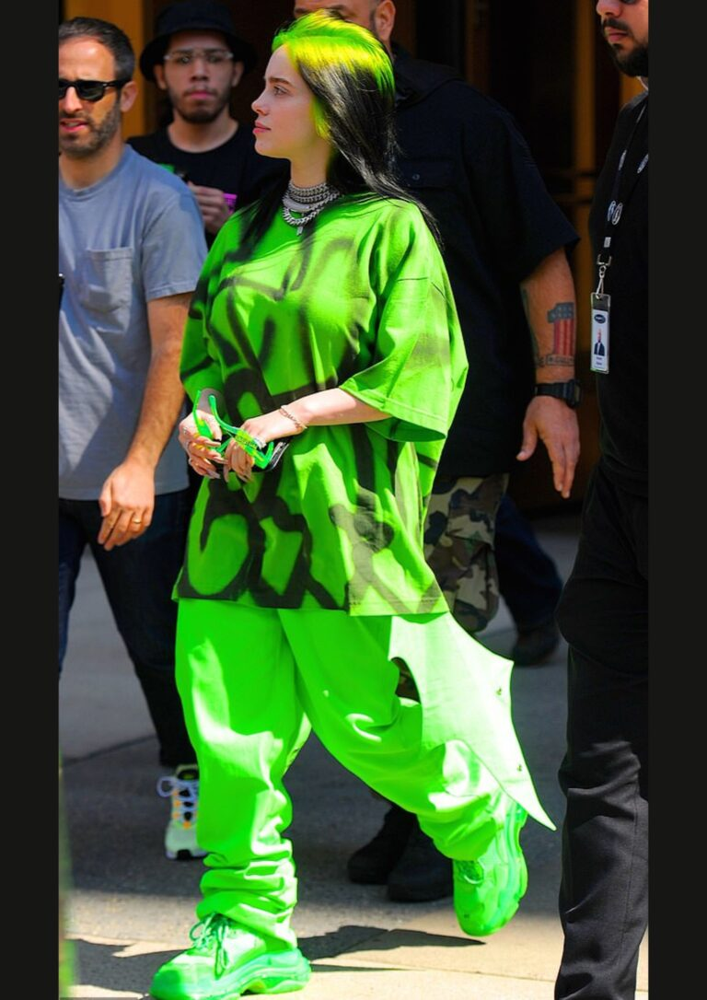

Born on December 18, 2001 in Los Angeles, Billie Eilish Pirate Baird O'Connell became one of the most defining voices of her generation. This site traces her journey — from a creative childhood in Highland Park, through the turbulence of teenage fame, to becoming a record-breaking global icon with 10 Grammys and 2 Oscars.
Billie Eilish Pirate Baird O'Connell was born on December 18, 2001 in the Highland Park neighbourhood of Los Angeles. Her parents, Maggie Baird and Patrick O'Connell, were both actors and musicians, though far from wealthy. Her father worked twelve-hour days as a construction worker, while her mother taught acting and organised songwriting workshops at home.
The family home was a two-bedroom house bursting with creativity — walls covered in art, shelves full of books, and instruments in every corner including three pianos. Billie and her older brother Finneas were homeschooled by their parents, giving them the freedom to dive deep into music from a very young age.
She wrote her first song at age 11 for her mother's songwriting class — inspired by The Walking Dead. She also trained at Revolution Dance Center, passionate about dance. But at 12, a serious hip injury ruptured her growth plate and ended her dancing career — the start of a long battle with her body and mind.
Music remained a refuge. In 2015, Finneas composed "Ocean Eyes" and gave it to Billie, then 13, to record. They uploaded it to SoundCloud "just for fun." Overnight, it went viral. The world had found Billie Eilish.
"At dance, you wear really tiny clothes. I've never felt comfortable in really tiny clothes. That was the peak of my body dysmorphia. I couldn't look in the mirror at all."
After "Ocean Eyes" went viral, Billie was signed to Interscope Records at just 14. She released her debut EP Don't Smile at Me in August 2017, aged 15. Whispered vocals, dark production, deeply personal lyrics. Teens around the world felt seen.
But behind the rising fame, Billie was living through the hardest years of her life. Between 13 and 16, she battled clinical depression, severe body dysmorphia, anxiety, and a period of self-harm. The hip injury had sent her into a spiral she described as a "hole" she couldn't climb out of.
"When anyone else thinks about Billie Eilish at 14, they think of all the good things. But all I can think of is how miserable I was. Thirteen to 16 was pretty rough."
She adopted baggy, oversized clothes as a way to hide — they became her signature style, later praised as resistance against the music industry's pressure on women.
In March 2019, aged 17, Billie released When We All Fall Asleep, Where Do We Go? — recorded in Finneas's bedroom. It debuted at #1 on the Billboard 200. Yet even as the world celebrated, Billie admitted she did not think she would survive to see 17.
"I don't want to be too dark but I genuinely didn't think I'd make it to 17."

Entering her twenties, Billie began a visible transformation. Her second album Happier Than Ever (July 2021) marked a turning point — more mature, more vulnerable, more confident. She traded the dark hair for platinum blonde and her music shifted toward self-discovery and emotional resilience.
At the 2021 Met Gala, she appeared in a blush-pink Oscar de la Renta ballgown and said simply: "I'm gonna be a woman. I want to show my body." For someone who had hidden herself for years, it was a profound statement.
"Going through my teenage years of hating myself... a lot of it came from my anger toward my body. Now I'm in love with my future."
She became increasingly open about her identity, speaking publicly in 2023 about being attracted to women. Her 2023 Oscar-winning song "What Was I Made For?" for the Barbie film became an anthem of self-questioning — resonating with millions.
In May 2024, she released Hit Me Hard and Soft — her most fearless work yet, with no pre-announced singles. The album's centrepiece, Birds of a Feather, became a global phenomenon. No longer at war with herself, Billie in her twenties is someone still evolving — but finally at peace.
At the 2020 Grammy Awards, aged just 18, Billie became the youngest artist ever to win all four major categories in a single night — Album, Record, Song of the Year and Best New Artist. She and Finneas swept the room with 5 awards each.
Across her career she has won 10 Grammy Awards from 34 nominations. In February 2026, she won Song of the Year for Wildflower — making her and Finneas record holders for winning that category three times, a feat no artist had ever achieved.
In film, she became the youngest two-time Oscar winner ever — first in 2022 for No Time to Die (James Bond), then in 2024 for What Was I Made For? (Barbie). She also holds 2 Golden Globes, 3 Brit Awards, 9 AMAs, 8 MTV VMAs, and over 22 Guinness World Records.
Her four albums — When We All Fall Asleep (2019), Happier Than Ever (2021), Hit Me Hard and Soft (2024) — were all critically acclaimed and chart-topping, streamed billions of times worldwide.
Beyond music, Billie uses her platform for environmental activism, mental health awareness, and social justice.
Billie Eilish's story is one of survival, honesty, and growth. From a two-bedroom house in Highland Park to the biggest stages on earth, she has never pretended to be something she isn't. Every award has been earned by someone who almost didn't make it through her own teenage years.
What makes Billie unique is not the Grammys or the Oscars. It is the way she has always allowed herself to be fully human in public — scared, proud, confused, joyful, evolving. She wore baggy clothes when she hated her body. She wore a ballgown when she was ready. She wrote about depression when she was living it, and about self-love when she began to find it.
She and Finneas built something rare: a creative partnership rooted in family and trust, making music in a childhood bedroom that went on to win the most prestigious awards in the world. No outside writers, no manufactured image — just two siblings and their shared obsession with sound and feeling.
"I had patience with myself. I didn't take that last step. I waited. Things fade."
At just 23 years old, Billie Eilish has already lived several lifetimes in the public eye. And yet she is still becoming. Whatever comes next — the world will stop for Billie Eilish.